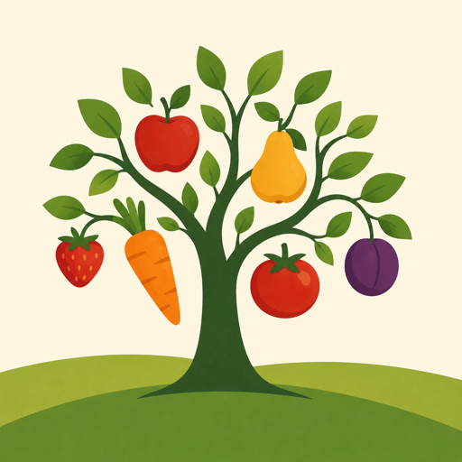
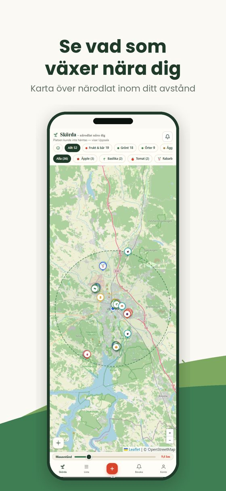
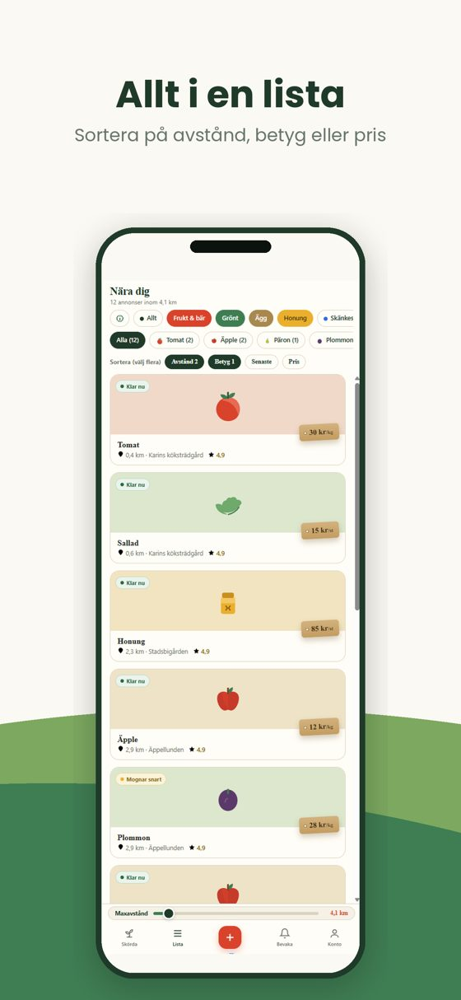
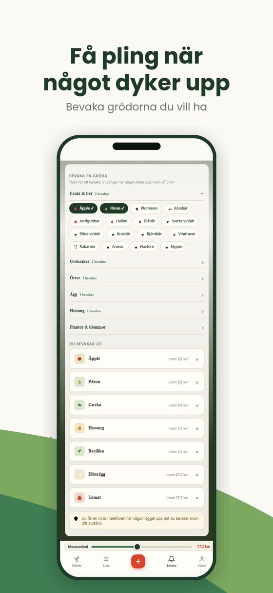

Skörda – närodlat nära digSkörda är en karta över hemodlat och närproducerat. Hitta äpplen, ägg, honung och grönsaker hos grannar och småodlare — och sälj ditt eget överskott i stället för att låta det ligga kvar under trädet.
Eller öppna Skörda direkt i webbläsaren
Gratis att använda. Ingen provision på det du säljer.



Allt från en hink äpplen på en uppfart till en bikupa med egen honung.
Äpplen, päron, plommon, vinbär och hallon från trädgårdar som ger mer än hushållet hinner med.
Tomater, potatis, sallat, squash och kryddor — ofta plockat samma dag som du hämtar.
Från hönsgårdar och biodlare i din kommun, i stället för från andra sidan landet.
Tips om bär, svamp och fruktträd på allmän mark som alla får plocka från.
Mycket läggs upp gratis. Ett äppelträd ger mer än någon familj klarar av.
Stånd vid vägen med kassa på förtroende, eller gårdar där du plockar själv.
Appen sammanför köpare och säljare. Sedan sköter ni det som vanligt, öga mot öga.
Ställ in hur långt du är beredd att åka, från fyrahundra meter till sex mil, och se vad som finns.
Fråga säljaren direkt i appen eller lägg en beställning. Du får svar i telefonen.
Ni gör upp på plats med Swish eller kontant. Skörda tar aldrig emot några pengar.
Du behöver varken företag, hemsida eller kassasystem. Lägg upp det du har över, så ser grannarna det på kartan.
De 200 första säljarna i varje län får Premium gratis i ett år och behåller märket Grundsäljare för alltid.
Premium är en prenumeration som förnyas automatiskt tills du säger upp den. Uppsägning sker i telefonens inställningar, inte i appen. Priserna gäller i Sverige inklusive moms.
Hittar du inte svaret hör du av dig till oss.
Nej. Appen är gratis för köpare, och Skörda tar ingen provision. Du betalar bara för varan, direkt till säljaren.
Nej. Varor du säljer visas på ungefärlig plats, mellan 150 och 400 meter från din riktiga adress, tills du accepterat en beställning. Först då får köparen exakt plats. Öppna stånd, självplock och saker du skänker bort visas däremot med exakt plats direkt, eftersom hela poängen är att man ska kunna komma dit.
På plats, med Swish eller kontant, precis som vid ett vägstånd. Appen hanterar inga betalningar och har ingen kortinlösen.
Att sälja överskott från den egna trädgården i liten skala kräver normalt inget företag, men reglerna beror på vad du säljer och hur mycket. Livsmedelsverket och Skatteverket har den aktuella informationen. Du ansvarar själv för att följa dem.
Tips om bär, svamp eller fruktträd på mark där allemansrätten gäller. Ingen äger det och ingen tjänar pengar — den som lägger upp tipset delar bara med sig. Andra kan kommentera och betygsätta om tipset stämde.
Hela Sverige. Hur mycket du hittar beror på hur många som lagt upp saker i just din trakt — appen växer underifrån, kommun för kommun.